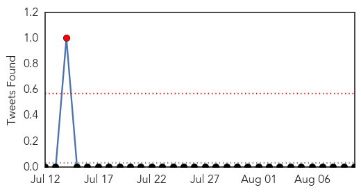
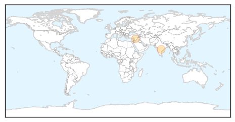
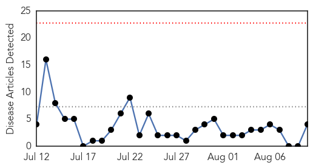
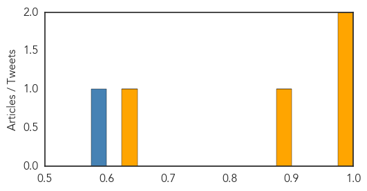

Influenza
30-Day Web Trend
0 alerts, 0 warnings
30-Day Twitter Trend
0 alerts, 0 warnings

Article Locations
Article Confidences

Top Articles:
Top Tweets:
-
No tweets found for Aug 10, 2015
Cholera
30-Day Web Trend
0 alerts, 0 warnings

30-Day Twitter Trend
1 alerts, 0 warnings
Article Locations
Article Confidences
Top Articles:
Top Tweets:
- 0.788
- RT: Doubts about the UN's legal immunity with the cholera epidemic in Haiti continue to grow: http://t.co/eZTOCUZHHr via @…